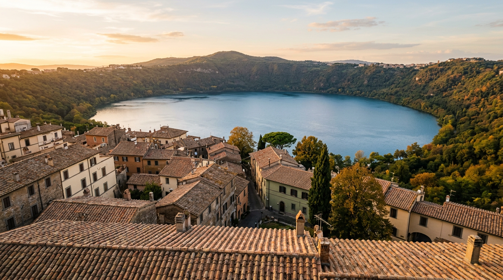

Cosa fare a settembre — il mese più bello dell'anno.

Ferragosto è passato, le comitive di pullman sono scomparse dalla piazza, il lago è ancora tiepido, i ristoranti tornano al ritmo dei tavoli prenotati con calma. Settembre a Castel Gandolfo è il mese che gli abitanti si tengono per sé. Ecco come viverlo da viaggiatore.
Il clima: caldo che si smussa
A settembre la temperatura massima media dei Castelli si assesta intorno ai 23,7 °C, con minime notturne sui 12 °C ([Wikipedia — Albano Laziale](https://it.wikipedia.org/wiki/Albano_Laziale)). Le giornate iniziano fresche, si scaldano rapidamente verso mezzogiorno e restano miti fino al tramonto: la giacca leggera serve solo la sera. Le piogge sono ancora rare nella prima metà del mese; il rischio temporale cresce nell'ultima settimana, quando l'umidità dei laghi incontra le prime correnti fredde.
La luce è quella per cui i pittori del Grand Tour venivano a passare l'autunno sui Colli Albani: bassa, dorata, con ombre lunghe già alle cinque del pomeriggio. Piazza della Libertà al tramonto, in una domenica di settembre, è probabilmente il momento migliore per fotografare il borgo.
Il lago: ancora balneabile
La stagione balneare del Lago Albano dura da giugno a settembre ([SeaTemperature.info](https://seatemperature.info/it/lago-albano-temperatura-mare.html)). A settembre l'acqua superficiale scende a una media di 21,5 °C, con punte fino a 26 °C nelle prime giornate del mese: nuotare è ancora piacevole, senza la calca ferragostana. Le spiagge libere lungo via Spiaggia del Lago restano aperte, i noleggi kayak e pedalò della zona lungolago proseguono nei weekend fino a fine mese, condizioni meteo permettendo.
Attenzione a un dettaglio poco conosciuto: la temperatura del Lago Albano cala rapidamente in profondità già oltre i due metri, come segnala la [Protezione Civile di Genzano](https://www.protezionecivilegenzano.it/comunicazioni/2026-05-19-sicurezza-laghi-nemi-albano/). Nuotare vicino a riva è sicuro; allontanarsi verso il centro del cratere richiede prudenza, soprattutto per bambini e nuotatori non allenati.
Le feste del mese
Settembre apre con la festa patronale. San Sebastiano, protettore di Castel Gandolfo, si celebra nel primo weekend del mese con processione dalla Chiesa Pontificia di San Tommaso da Villanova, musica in piazza e fuochi pirotecnici sul lago ([Visit Castelli Romani](https://www.visitcastelliromani.it/informazioni/castel-gandolfo/events/)). Non è un appuntamento turistico: è una festa di paese, densa di famiglie, bambini che rientrano da scuola con la faccia dipinta e nonne sedute in piazza fino a mezzanotte.
Nei Castelli vicini settembre è il mese delle sagre gastronomiche. Ariccia celebra la 73ª Sagra della Porchetta IGP nel primo weekend (4-6 settembre), Rocca Priora la 32ª Sagra del Fungo Porcino nel weekend successivo (4-20 settembre), Velletri la 34ª Festa del Fungo Porcino (3-20 settembre), Albano il Bajoccofestival di arti performative (11-13 settembre) ([Castellinforma](https://www.castellinforma.it/)). Con l'auto da Castel Gandolfo si raggiungono tutti in meno di venti minuti.
“La prima domenica di settembre si celebra la festa del patrono, con una processione, musiche, incontri culturali e fuochi pirotecnici.”Visit Castelli Romani — programma tradizionale di Castel Gandolfo
Ville Pontificie: visita finalmente in calma
Con la fine del soggiorno papale a metà agosto e l'archiviazione del periodo di massima affluenza, il complesso delle Ville Pontificie — Palazzo Apostolico, Giardino Barberini, Specola Vaticana — torna a orari e capienze normali. Le visite guidate, prenotabili sul sito dei Musei Vaticani, ritrovano gruppi più piccoli e ritmi meno affollati. È il momento migliore per il tour completo, con soste ai belvedere del giardino e nella galleria dei ritratti.
Il Comune di Castel Gandolfo segnala anche le aperture guidate ordinarie del complesso pontificio a partire dal 17 agosto ([visitcastelliromani.it](https://www.visitcastelliromani.it/castellinforma/)). Chi vuole abbinare la visita alla passeggiata al lago può prenotare il primo turno del mattino, pranzare in centro storico e scendere al lungolago nel pomeriggio.
Camminate: i sentieri del cratere
A settembre riaprono davvero le camminate. In agosto il caldo scoraggia anche gli allenati; da metà settembre il periplo del Lago Albano — dieci chilometri lungo la sponda, quasi tutto in ombra di lecceti e castagni — torna praticabile senza fatica. Il [Parco Regionale dei Castelli Romani](https://www.parcocastelliromani.it/) mantiene i sentieri segnalati e la tabellonistica aggiornata.
Chi cerca un itinerario breve può salire al belvedere di Monte Cavo (30 minuti dal borgo in auto, poi trenta a piedi): a settembre il panorama copre il Tirreno da Anzio a Terracina, cosa che l'afa estiva rendeva impossibile.
Un consiglio finale
Prenotate infrasettimanale. I ristoranti sul lago — quelli veri, quelli dove mangiano i romani nel weekend — a settembre hanno tavoli disponibili anche il sabato sera, ma dal martedì al giovedì diventano un piccolo lusso: pochi coperti, servizio sereno, prezzi identici al resto dell'anno. È l'occasione per provare quelli che d'estate sono impossibili.